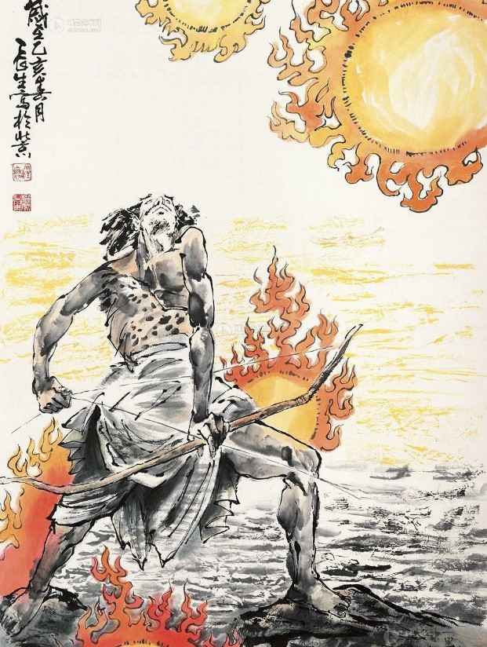
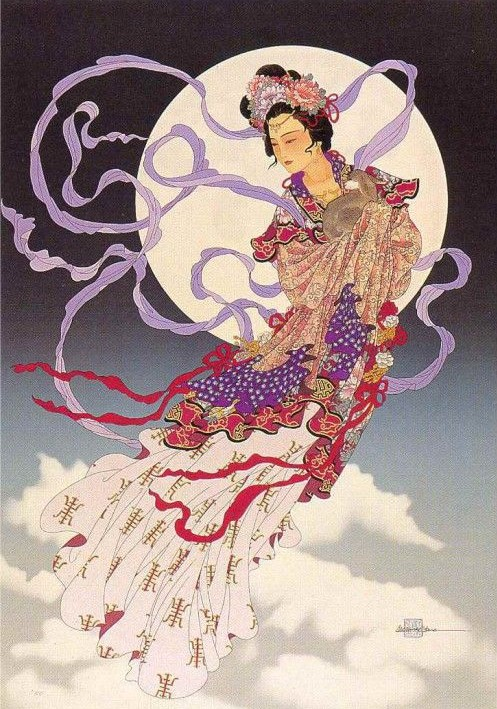
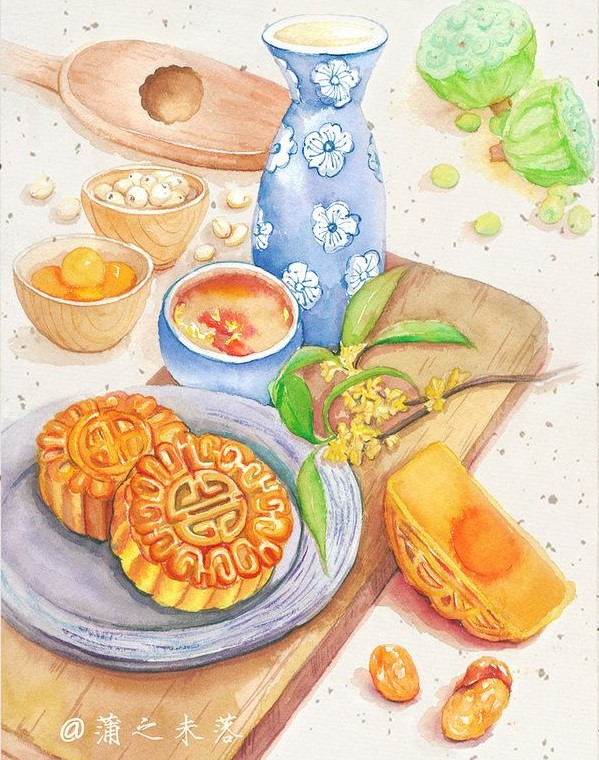

The Story of Chang'e and Hou Yi
The most prominent legend of the Mid-Autumn Festival regards Chang'e, the Chinese Moon Goddess,
and Hou Yi, an excellent archer, who was also Chang'e's husband
Hou Yi Shooting the Sun
Long, long ago, there were 10 suns in the sky. The suns burnt all the land on Earth and brought death to humans.
One day, an archer, Hou Yi used his bow and arrows and shoot down nine of the suns and all the people on Earth were saved.
The Queen of the West, gave Hou Yi a bottle of elixir that could make him immortal. The elixer can only be used by one individual.
Although Hou Yi did want to become immortal, he wanted to be together with Chang'e, his wife, more.
So, he ended up not drink the elixir and asked Chang'e to keep it safe for him instead.

Chang'e Flying to the Moon
Hou Yi became very famous after he shot down the nine suns. People wanted him to be their master and most of them were accepted by Hou Yi.
However, not every student who was under Hou Yi had good intentions. Pang Meng, was one such student. He had the intention of stealing Hou Yi's elixer of immortality.
One day, when Hou Yi went hunting with his students, but Pang Meng pretended to be ill and stayed at home. After making sure Hou Yi had left for the forests with his students, he went to Hou Yi's home and tried to force Chang'e to give him the elixir.
Chang'e sticken with fear, knowing that she wouldn't be able to defend herself against Pang Meng, drank the elixir immediately in panic because she didn't want the elixer to fall into the wrong hands.
Drinking the elixer made Chang'e fly higher and higher to the point where she landed on the moon.
Chang'e had become immortal.

Hou Yi Offering Mooncakes to the Moon and Chang'e
Hou Yi was heartbroken when he found out what had happened to Chang'e.
He shouted to the sky and surprisingly discovered the moon was extremely bright that night and then, caught sight of a swaying figure that looked exactly like Chang'e.
Seeing that, Hou Yi made an offering of fruits and cakes that Chang'e had enjoyed, to let her know that he missed her.
Since then, during the Mid-Autumn Festival, people have offered fruits and mooncakes to worship the moon.

For a better visual representation of the background of this auspicious celebration, do check out the short Youtube video below!